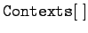

Inhalt Index DeskTop Bronstein

 Computeralgebrasysteme Mathematica Ergänzungen zur Syntax, Informationen, Meldungen
Computeralgebrasysteme Mathematica Ergänzungen zur Syntax, Informationen, Meldungen


Mathematica muß mit einer Vielzahl von Symbolen umgehen, darüber hinaus lassen sich weitere Programmoduln je nach Bedarf hinzuladen. Um Mehrdeutigkeiten zu vermeiden, bestehen die Namen von Symbolen in Mathematica aus zwei Teilen, dem Kontext und dem Kurznamen.
Als Kurznamen bezeichnet man die Benennungen von  und Elementen der Ausdrücke. Darüber hinaus benötigt Mathematica für die Benennung von Symbolen Angaben über die Zugehörigkeit des Symbols zum jeweiligen Programmteil. Dies wird durch die Angabe des Kontext gewährleistet, der den entsprechenden Programmteil benennt. Der vollständige Name eines Symbols besteht daher aus dem Kontext und dem Kurznamen, die durch ein ' verbunden werden.
und Elementen der Ausdrücke. Darüber hinaus benötigt Mathematica für die Benennung von Symbolen Angaben über die Zugehörigkeit des Symbols zum jeweiligen Programmteil. Dies wird durch die Angabe des Kontext gewährleistet, der den entsprechenden Programmteil benennt. Der vollständige Name eines Symbols besteht daher aus dem Kontext und dem Kurznamen, die durch ein ' verbunden werden.
Beim Start von Mathematica sind immer zwei Kontexte präsent: System' sowie Global'. Über die Verfügbarkeit weiterer Programmoduln kann man sich mit dem Befehl  informieren lassen.
Alle in Mathematica eingebauten Funktionen laufen unter dem Kontext System', während die vom Nutzer definierten unter dem Kontext Global' abgelegt werden.
Ist ein gegebener Kontext aktuell, also der entsprechende Programmteil geladen, so können die Symbole mit ihrem Kurznamen angesprochen werden.
Beim Einlesen eines weiteren Mathematica-Programmoduls mit werden die dazugehörigen Kontexte geöffnet und der schon vorhandenen Liste vorn hinzugefügt. Es kann vorkommen, daß vor dem Zuladen des neuen Moduls ein Symbol mit einem Namen eingeführt wurde, der jetzt in dem neu eröffneten Kontext unter einer anderen Definition ebenfalls vorhanden ist. In diesem Falle informiert Mathematica in einer Meldung darüber. Dann ist entweder der vorher definierte Name mit zu löschen, oder aber man verwendet für das zugeladene Symbol den vollständigen Namen.
Neben den Eigenschaften, die Symbole per Definition besitzen und die in der Regel spezieller Natur sind, kann man ihnen allgemeinere Eigenschaften, nämlich Attribute wie , d.h. ungeordnet, kommutativ, , d.h., Werte können nicht geändert werden, oder , d.h, Attribute können nicht geändert werden u.a. zuordnen. Auskunft über die für das jeweilige Objekt zutreffenden Attribute erhält man mit .
Eigene Symbole können mit geschützt werden, so daß keine anderen Definitionen für diese Symbol eingeführt werden können. Mit kann das Attribut wieder entfernt werden.